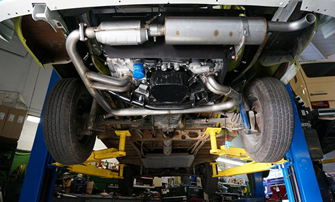

mechanics

Reliability - an important point in the condition of the car during a long road.
We are ready to do everything for this.
We will gladly repair your engine or replace unreliable units with new ones.
We also prepare suspension parts for bad roads.
After all, the suspension is comfort.
And we know that without a comfortable road it is not possible to focus on the beauty around.
We are ready to do everything for this.
We will gladly repair your engine or replace unreliable units with new ones.
We also prepare suspension parts for bad roads.
After all, the suspension is comfort.
And we know that without a comfortable road it is not possible to focus on the beauty around.